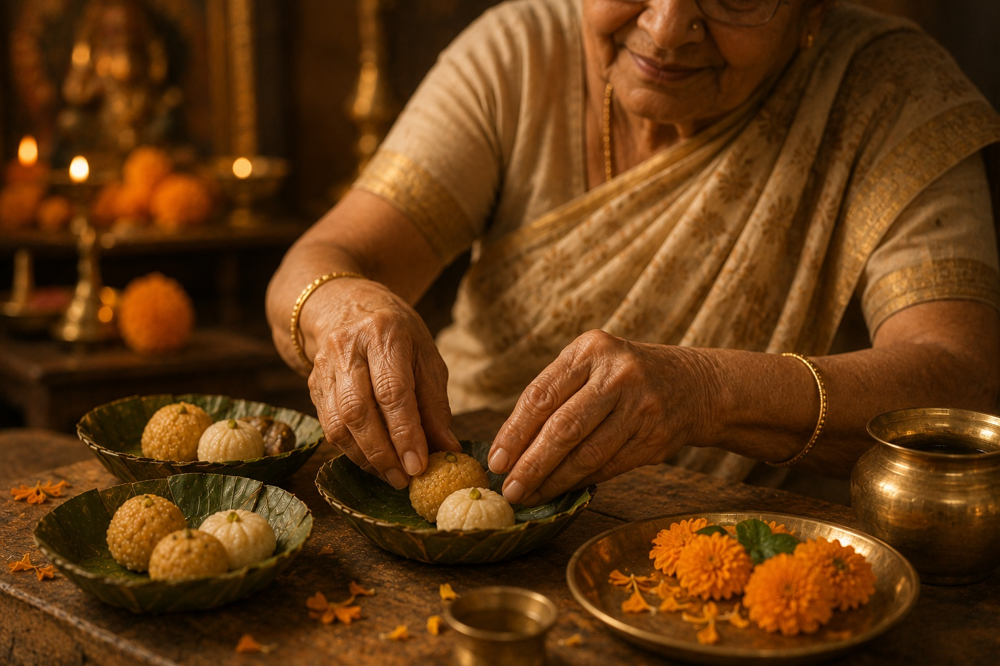

पत्रं पुष्पं फलं तोयं यो मे भक्त्या प्रयच्छति ।
तदहं भक्त्युपहृतम् अश्नामि प्रयतात्मनः ॥
Patraṃ puṣpaṃ phalaṃ toyaṃ yo me bhaktyā prayacchati / tad ahaṃ bhakty-upahṛtam aśnāmi prayatātmanaḥ
Whoever offers me a leaf, a flower, a fruit, or water with devotion — that offering of love, from a pure heart, I accept. (Bhagavad Gita 9.26 — the verse that defines the theology of prasad)
The Peda
Mathura's Signature Sweet
The Mathura peda is a pale brown disc of reduced milk — khoya — flavored with cardamom and shaped by hand. It is sold near Holi Gate, near Krishna Janmabhoomi, near the ghats, at almost every temple entrance in the city. The price is roughly $3–4 per kilogram. It has been made this way, in this city, for centuries.
What makes it specific to Mathura is the khoya — the milk reduced by slow cooking until it is nearly solid. The cow in the Braj tradition is sacred not as an abstract symbol but as a practical one: Braj's economy was built on dairy, the cows were the source of everything, and milk reduced to its essence is the most concentrated form of what the cow provides. The peda is not a sweet. It is milk at its most essential — concentrated, transformed, offered back.
It is always sold as prasad near temple precincts — blessed food, food that has been in the presence of the divine, food that carries something back to the person who receives it. You do not simply eat a Mathura peda. You receive it.
Makhan Chor
What the Butter Theft Actually Means
Krishna stole butter. This is one of the most famous episodes of his childhood in Vrindavan — the small boy breaking into neighbors' homes, overturning pots, distributing the butter to his friends and to monkeys. Yashoda caught him, tied him up, scolded him. He looked at her with those eyes and she forgot she was angry.
The tradition is not embarrassed by this story. It is centered on it. Temples in Vrindavan are named for it — Makhan Chor, the Butter Thief. The reason is what butter represents. Milk, when it sits, produces cream. Cream, when it is churned, produces butter. Butter is the essence — the most valuable, most concentrated element — extracted through sustained effort and agitation. In Vedic symbolism, butter is the divine extracted from existence through the churning of sadhana — spiritual practice. What Krishna steals is not dairy. He steals what has been most carefully distilled from ordinary life.
The cosmic version of this is the Samudra Manthan — the churning of the ocean of existence — which produced amrita, the nectar of immortality. The Vrindavan version is the same story at household scale: you churn, you distill, and what is most precious in the result is taken by the divine. This is not theft. This is the natural direction of what is most essential.
The Chappan Bhog
56 Offerings and What They Count
The Chappan Bhog — 56 offerings — is the elaborate ceremonial meal presented to the deity at major Braj temples, particularly at Banke Bihari and Govardhan. The number 56 has a specific origin: during the seven days Krishna held Govardhan Hill overhead to shelter the village from Indra's rain, he could not eat. Eight meals per day for seven days — 56 missed meals. The Chappan Bhog is the community's retroactive offering of what he went without during those seven days.
The 56 items typically include fruits, sweets, breads, rice preparations, vegetables, drinks, and dairy in elaborate variety. Each item has a name and a significance. The offering is not presented and then discarded — it becomes prasad, distributed to devotees who receive it as the deity's blessing returned to them.

Prasad arranged by hand — what is offered returns as blessing
The logic of prasad is circular in the best sense: you offer to the divine what came from the divine, and it is returned to you carrying something it did not have before. The food itself has not changed chemically. What has changed is its relationship — it has been in the presence of the sacred and come back. Every grandmother in the Braj tradition understands this without needing it explained. It is simply how food works when it is prepared with the right intention.
Sattvic Food
What You Eat Shapes What You Think
The Bhagavad Gita's Chapter 17 addresses food with a precision that surprises first-time readers. Sattvic food — fresh, natural, mild, lightly spiced, dairy-based — promotes clarity, lightness, and equanimity. Rajasic food — very spicy, rich, heavily flavored — promotes agitation, ambition, restlessness. Tamasic food — stale, heavy, putrid — promotes dullness, inertia, unconsciousness.
This is not dietary advice in the contemporary sense — it is not about nutrition labels or calorie counts. It is a statement about how what you consume affects the quality of your consciousness. A mind that is perpetually agitated by its diet cannot achieve the stillness that meditation requires. A mind dulled by tamasic food cannot achieve the discrimination that wisdom requires. Food is not just fuel. It is one of the primary inputs into the quality of your inner life.
The food culture of Mathura and Vrindavan is built on this understanding. Temple food is vegetarian, freshly prepared, offered before being eaten. The dhaba culture around the temples extends the same logic to simpler, cheaper form — dal, sabzi, roti, rice, with a brass vessel of lassi. No meat anywhere in the sacred precincts. Not as prohibition, but as the natural consequence of a food culture organized around what produces clarity rather than agitation.
For the UPAD Detroit community, this translates directly to how prasad is prepared for community events — with care, with cleanliness, with the intention that the food is an offering before it is a meal. That intention is not superstition. It is a very old and very precise understanding of how the quality of attention invested in preparation carries forward into the food itself. Not cuisine. Offering.